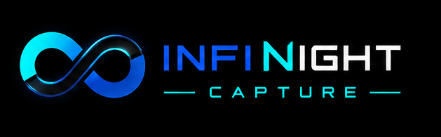
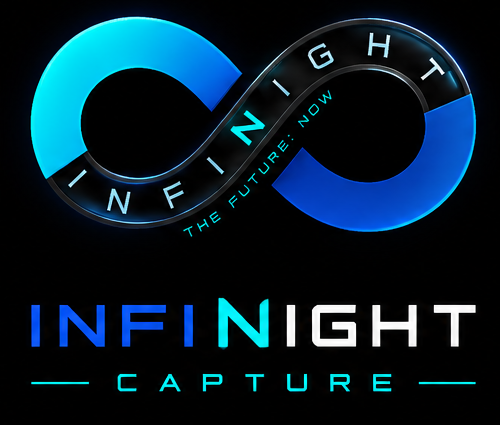

Gesture Matrix
Route face, hand, and pose events to shader parameters and composition controls.


Webcam mocap for live visuals
Turn face, hand, and upper-body motion into shader output for Syphon, Spout, and NDI. Try the full workflow free, then pay $5 once to remove the watermark.
Secure checkout powered by Stripe. One-time purchase.
Hands, upper body, face signals, and gesture states.
Map motion to melt, bloom, warp, fire, and custom GLSL presets.
Built for Syphon, Spout, and NDI desktop performance workflows.
Built for the booth
Route face, hand, and pose events to shader parameters and composition controls.
Bring in GLSL snippets, raw URLs, Shadertoy-style code, and saved presets.
Package live visuals for macOS Syphon, Windows Spout, and NDI pipelines.
Let anyone try the app for free with a watermark on exported and routed output.
Desktop installers are available for the main live-visual rigs.
Test the capture, shader, and output workflow before buying.
Remove the watermark, get private installers, and recover downloads by email.
Use the recovery page or email support if a download link goes missing.
Pads + XY control
The pads workspace gives each hand a playable control area, then routes strikes and XY movement into shader parameters.
Control Surface
Signal routing
Use hand pads, face gestures, and pose signals to drive shader parameters, switch effects, and publish the final feed to Syphon, Spout, or NDI.
Strike six pads, ride XY zones, and map each hand to shader values during a set.
Route started, held, released, repeated, and latched gestures to effects or output changes.
Publish shader, wireframe, or full camera composite feeds into desktop VJ tools.
Simple pricing
Explore the full visual workflow with a watermark on output.
Get DemoRemove the watermark, unlock private macOS and Windows installers, and use the app in live performance outputs.
Secure checkout powered by Stripe.
Already purchased? Recover your downloadFree demo
Try the full capture workflow for free with a watermark on output. No checkout needed.